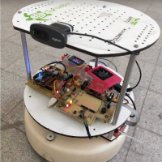
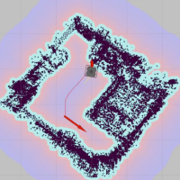
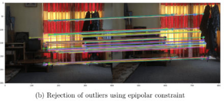
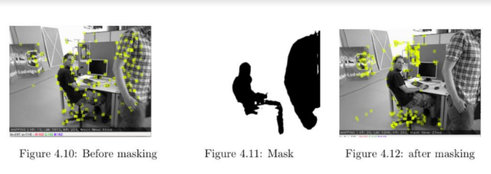
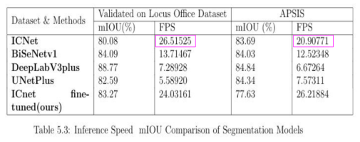
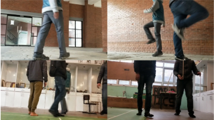

Real Time Visual Localization and Mapping of Mobile Robot in Dynamic Environment
Final Year Project
2020
Human brain is extremely powerful that it can map out the entire
3D environment. This helps us to localize our whereabouts and even
helps to navigate from one point to another.
However, lots of researches have been carried out to mimic
this ability of humans
to artificial bots. Use of expensive sensors like 3D lidars
might help to increase the accuracy of localization and
navigation,
but is not practical to use in small bots. Therefore, our goal is
to use cheap single camera to make robot able to localize
and
navigate in the environment.
This project uses camera as its only sensor to build 3d map of
entire room and localize
itself in the built map. The map can then be used for navigation
purposes within the
mapped environment. Problems such as dynamically changing
environment, varying
lightening conditions, lack of textured environment are the
hindrances for visual SLAM.
Some of these problems has been well tackled in this project.
Dynamic objects in the
environment have been masked to minimize its effect. Light
invariant feature extraction
has been used to tackle with variations in lightening
conditions.




Dynamic Obstacle Detection Using Semantic Segmentation
Dynamic Obstacle that hinders the visual SLAM has been
tackled
by using Semantic Segmentation Technology. I have been
responsible for this task. My role mainly included carrying
out the Proof of Concepts
(POC) of the existing semantic segmentation models and
train,
fine-tune and employ the model integrating it with the rest
of
the system. My roles are:
Models Comparisons
Human was considered as main dynamic object and model was trained to generate the human segmentation mask. IcNet was taken as final choice on the basis of Speed vs mIOU tradeoff from various models such as: ICNet, BiSeNetv1, DeepLabV3plus, UNetPlus.
Human was considered as main dynamic object and model was trained to generate the human segmentation mask. IcNet was taken as final choice on the basis of Speed vs mIOU tradeoff from various models such as: ICNet, BiSeNetv1, DeepLabV3plus, UNetPlus.

Custom Dataset Generation
To fine-tune ICNet model, custom dataset of legs of human (since, human legs mainly fall in the vision of robot) was created. Both test datasets and validation datasets were generated from sequences of images from video of person walking on multi environment under various lighting conditions. In order to label the dataset, instance segmentation was performed using pretrained model of R50-FPN from detectron2 model zoo. Output was twisted to generate just binary mask.
To fine-tune ICNet model, custom dataset of legs of human (since, human legs mainly fall in the vision of robot) was created. Both test datasets and validation datasets were generated from sequences of images from video of person walking on multi environment under various lighting conditions. In order to label the dataset, instance segmentation was performed using pretrained model of R50-FPN from detectron2 model zoo. Output was twisted to generate just binary mask.

Prevention of Overfitting
In order to prevent overfit of ICnet model, feature extracting backbone was frozen during fine tuning.
In order to prevent overfit of ICnet model, feature extracting backbone was frozen during fine tuning.
Team Members


")